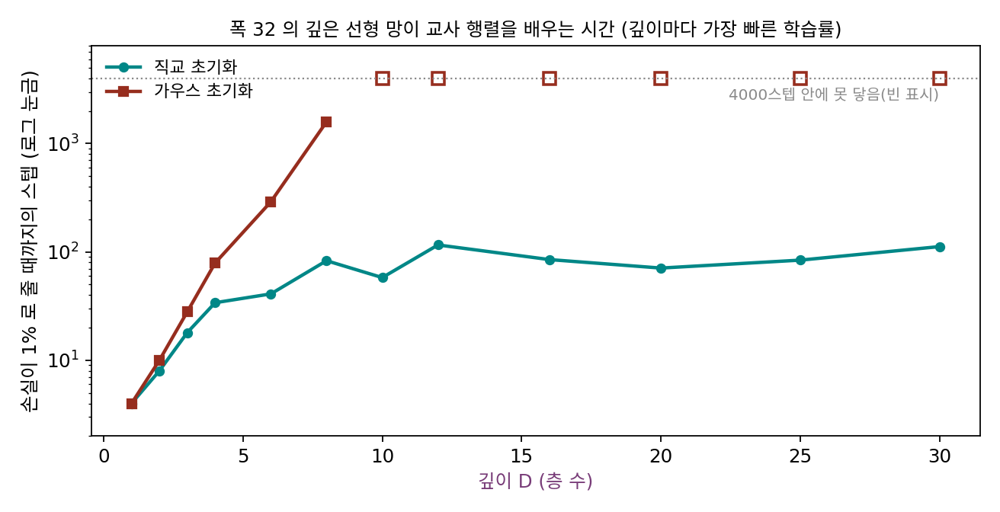
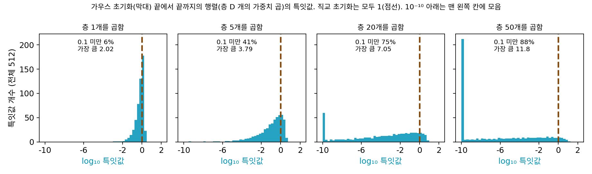
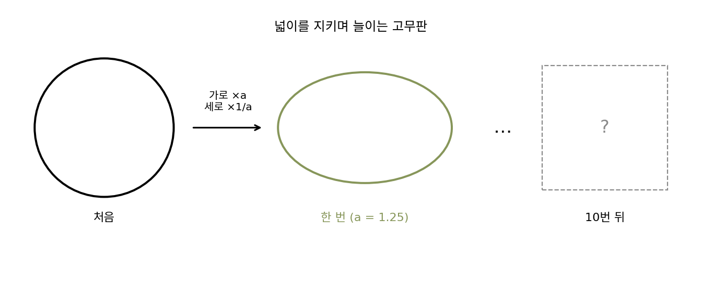
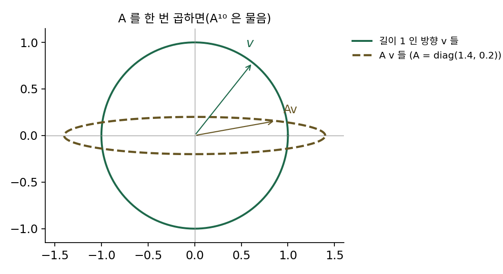
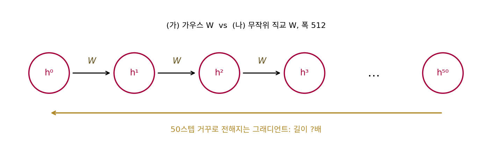

직교 초기화: 모든 방향의 길이를 지키기
허 초기화로 ReLU 망의 분산을 지켰다. 분산은 칸 n개의 평균적인 크기이니, 무작위로 고른 입력 하나를 넣었을 때 그 길이가 지켜진다는 뜻이다. 그런데 학습에 필요한 그래디언트는 아무 방향에서나 오지 않아서, 손실이 특정한 방향으로 파라미터를 움직이라고 하면 그 방향의 그래디언트가 아래층까지 살아서 와야 한다. 평균적인 방향의 길이는 지켜도, 어떤 방향은 크게 늘이고 어떤 방향은 거의 지워 버리는 행렬이라면 어떨까?
역사: 깊이와 상관없이 배우는 선형 망
2013년 12월, 앤드루 색스(Andrew Saxe), 제임스 매클렐런드(James McClelland), 수리아 강굴리(Surya Ganguli)는 논문 「깊은 선형 신경망 학습의 비선형 동역학에 대한 정확한 해」를 공개했다(이듬해 표현 학습 국제 학회 ICLR 에 제출). 활성화 함수가 없는 선형 망은 층을 아무리 쌓아도 결국 행렬 하나와 같아서 표현력은 늘지 않는다. 그런데 학습의 움직임은 층을 쌓으면 비선형이 된다. 오래 정체하다가 갑자기 오차가 뚝 떨어지는, 비선형 망에서 보던 모습이 선형 망에서도 나타난다. 그들은 이 움직임을 식으로 정확히 풀었다.
이 논문의 실험 하나가 초기화의 물음을 바꿨다. 층마다 미리 학습시켜 쌓은 선형 망은 층이 늘어도 학습에 걸리는 시간이 늘지 않았는데, 분산을 맞춘 가우스 무작위 가중치에서 출발한 망은 층이 늘수록 오래 걸렸다. 그들은 미리 학습 없이 그 학습 속도를 얻는 무작위 초기화가 있는지 물었고, 층마다 무작위 직교 행렬을 쓰면 미리 학습한 것과 구별되지 않게 깊이와 상관없이 빨리 배운다는 것을 보였다. 둘 다 크기를 지키는 초기화인데 왜 다를까? 그들의 답은 행렬을 여러 개 곱한 것의 특잇값(행렬이 축마다 늘이는 배율)에 있었다. 그리고 거꾸로 전해지는 자코비안의 곱이 가능한 한 많은 방향에서 길이를 거의 지키는 상태를 「동역학적 등거리성(dynamical isometry)」이라 이름 붙였다.


선형 망은 층을 아무리 쌓아도 행렬 하나랑 같다면서요. 그런 망을 왜 논문으로 파요?

활성화 함수가 낀 망의 학습이 어떻게 흘러가는지, 그때 식으로 정확히 풀 수 있었을까요?

음, 활성화 함수가 끼면 손실을 가중치로 미분한 식부터 손으로 다루기 어려울 것 같아요.

그래서 색스와 동료들은 표현력은 늘지 않아도 학습의 움직임은 비선형이 되는 선형 망을 골랐어요. 오래 정체하다 갑자기 오차가 떨어지는 모습이 거기서도 나오니까, 정확히 풀리는 망으로 그 모습을 들여다본 거예요.
그래도 가우스 초기화도 분산은 맞춘 거잖아요. 둘 다 크기를 지키는데 왜 하나만 느려요?

분산은 무작위 방향 하나의 길이만 보는 거니까… 어떤 방향은 늘고 어떤 방향은 줄어도 평균만 맞으면 분산은 같게 나오겠네.
평균 말고 방향마다 몇 배가 되는지를 한꺼번에 보여 주는 게 특잇값이에요.

그럼 가우스 행렬을 스무 장 곱하면, 그 특잇값들은 실제로 어떻게 퍼져 있어요?
가우스 행렬 스무 장의 곱
활성화 함수 없이 폭 512의 행렬을 D장 곱한 것, 곧 맨 아래에서 맨 위까지 신호를 옮기는 행렬 WD⋯W1을 보자. 이 곱 행렬은 활성화 함수가 없을 때 앞으로 가는 자코비안의 곱이고, 그 전치가 거꾸로 갈 때의 곱이다. 가우스 초기화(칸 표준편차 1/√n, c = 1)로 뽑은 이 곱의 특잇값 512개가 어떻게 퍼져 있는지 재 보면 다음과 같다.
| 곱한 장수 D | 가장 큰 특잇값 | 가운데 특잇값 | 0.1 미만인 비율 | 무작위 벡터 하나의 길이 배율 |
|---|---|---|---|---|
| 1 | 2.02 | 0.807 | 6.4% | 1.023 |
| 5 | 3.79 | 0.191 | 41.4% | 0.995 |
| 20 | 7.05 | 0.00096 | 75.0% | 0.982 |
| 50 | 11.8 | 2.7 × 10⁻⁸ | 87.9% | 0.807 |
무작위 벡터 하나를 넣으면 스무 장을 지나도 길이가 0.982배로 거의 바뀌지 않는다. 분산 보존이 약속한 것은 이것까지다. 그런데 특잇값을 보면 스무 장의 곱은 512개 방향 가운데 4분의 3을 0.1배 아래로 줄이고, 가운데 특잇값은 0.00096이다. 대신 몇몇 방향은 일곱 배로 늘인다. 특잇값 제곱의 평균은 1.06으로 1 근처라 평균은 맞지만, 길이를 소수의 방향에 몰아서 지키는 것이다. 이런 곱을 거꾸로 지나는 그래디언트는 방향에 따라 대부분 거의 지워진다.
방향마다 다르게 늘이는 것을 피하려면, 행렬 하나하나가 어느 방향의 길이도 바꾸지 않으면 된다. 그런 행렬이 직교 행렬 Q다.
직교 행렬은 벡터를 돌리거나 뒤집기만 하고 늘이거나 줄이지 않으므로 특잇값이 모두 1이다. 직교 행렬을 몇 장 곱해도 직교 행렬이라 곱의 특잇값도 모두 1이다. 같은 가우스 행렬을 QR 분해(행렬을 직교 행렬 Q와 위삼각 행렬 R의 곱으로 나누는 계산)해 Q만 쓰면 무작위 직교 행렬을 얻는다. 표의 실험을 이 직교 행렬로 다시 하면 D = 50에서도 가장 큰 특잇값, 가장 작은 특잇값, 무작위 벡터의 길이 배율이 모두 1이다. 층마다 가중치를 무작위 직교 행렬로 뽑는 것을 직교 초기화 (모든 방향의 길이를 지키는 무작위 직교 행렬로 시작하기 / orthogonal initialization)라 한다.

ML에서: 선형이 아닌 망의 동역학적 등거리성
파이토치에는 torch.nn.init.orthogonal_이 있어 가중치를 무작위 직교 행렬로 다시 뽑고, 게인을 곱할 수도 있다. 직교 초기화가 직접 통하는 것은 위처럼 폭이 같은 정사각 행렬이고, 활성화 함수가 있으면 자코비안에 활성화 함수의 미분이 끼어들어 특잇값이 다시 퍼진다. 색스와 동료들 이후 제프리 페닝턴(Jeffrey Pennington), 새뮤얼 숀홀츠(Samuel Schoenholz), 강굴리는 2017년 논문에서 tanh 같은 활성화 함수에서도 직교 초기화와 알맞은 배율로 동역학적 등거리성에 가까이 갈 수 있고, ReLU 망에서는 그렇게 할 수 없다는 분석을 냈다. 오늘날의 큰 모델은 대부분 직교 초기화 대신 다음 개념, 곧 층을 건너뛰는 연결로 이 문제를 비켜 간다.
문제 10. 넓이를 지키며 늘이는 고무판
고무판에 원을 그리고, 가로는 a배로 늘이고 세로는 1/a배로 줄이는 일을 10번 되풀이한다. 판의 넓이는 늘 처음과 같다. (가) a = 1.25와 a = 2일 때 10번 뒤 원의 가로와 세로는 처음의 몇 배인가? (나) 넓이만 보고 「판이 그대로 지켜졌다」고 말할 수 있는가?

넓이가 그대로니까 원도 크기는 그대로겠죠. 모양만 조금 납작해지고요.
a = 2로 직접 계산해 봐요. 「조금」인지 보게요.

가로가 2¹⁰ = 1,024배, 세로가 1/1,024 = 0.00098배예요. 넓이는 1인데 원이 거의 선이 됐어요. a = 1.25여도 가로 9.31배, 세로 0.107배고요.
넓이는 두 배율을 곱한 거라서, 한쪽이 커지고 다른 쪽이 작아지면 얼마든지 1로 맞춰져. 넓이가 지켜졌다는 건 모양에 대해 아무것도 말해 주지 않아.
원을 원 그대로 두려면 판을 어떻게 움직여야 하죠?

돌리기만 해야 해요. 늘이지도 줄이지도 않고요. 가로와 세로의 배율이 둘 다 1이어야 해요. 그게 직교 행렬이고요. 가우스 초기화가 지킨 「평균 크기」는 이 판의 넓이 같은 거였네요.

팀 평균 학점이 3.5라서 다들 잘하는 줄 알았는데, 한 명이 4.5고 한 명이 2.5였던 거랑 같아요.
문제 11. 2×2 행렬로 보는 평균과 방향
행렬 A = diag(1.4, 0.2)(첫 축은 1.4배, 둘째 축은 0.2배로 늘이는 행렬)가 있다. (가) 길이 1인 방향 v를 고루 돌려 가며 |Av|²의 평균을 내면 얼마인가? (나) A를 10번 곱한 A¹⁰은 가장 크게 늘이는 방향과 가장 작게 늘이는 방향을 각각 몇 배로 늘이는가? 이때 |A¹⁰v|²의 평균은? (다) A 대신 회전 행렬로 같은 계산을 하면?

(가)는 방향 v = (cos t, sin t)에서 |Av|² = 1.96cos²t + 0.04sin²t이고, 돌려 가며 평균 내면 (1.96 + 0.04)/2 = 1이야. 평균으로는 길이를 지키는 행렬이야.
그럼 10번 곱해도 평균은 1이겠죠. 평균을 지키는 걸 10번 했으니까요.
계산해 보세요. 가장 큰 배율과 가장 작은 배율부터요.

1.4¹⁰ = 28.9, 0.2¹⁰ = 1.02 × 10⁻⁷이요. 그리고 |A¹⁰v|²의 평균은… 418이에요. 1이 아니에요! 한 번은 평균을 지켰는데 열 번 하니까 안 지켜지네요.
같은 방향이 매번 1.4배씩 늘어나니까 1.4²⁰ = 837이 되고, 그걸 둘로 나눠서 418이야. 한 장씩의 평균이 1이어도, 늘이는 방향이 매번 같으면 곱하면서 평균도 틀어지는구나.

가우스 행렬을 여러 장 곱할 때는 늘이는 방향이 장마다 무작위로 달라서 평균은 1 근처에 남았어요. 그래도 대부분의 방향이 줄어드는 건 막지 못했죠. 회전 행렬은요?
회전은 특잇값이 둘 다 1이라 열 번 곱해도 1, 1이에요.
그럼 평균도 1이고, 가장 크게 늘이는 방향도 1배네.

응, 어느 방향도, 몇 번을 곱해도 길이가 바뀌지 않아. 평균만 맞추는 건 한 장일 때만 안전하고, 장수가 늘면 모든 방향을 지키는 수밖에 없네. 선형대수에서 직교 행렬만 노름을 보존한다고 배운 걸 이렇게 쓰는 거였어.
문제 12. 같은 행렬을 50번 곱하는 순환 신경망
순환 신경망은 같은 가중치 행렬 W를 시간 스텝마다 되풀이해 곱한다. 폭 512의 W를 (가) 가우스(칸 표준편차 1/√512)와 (나) 무작위 직교 행렬로 뽑아 50번 곱한 W⁵⁰을 비교하라. 고윳값의 크기, W⁵⁰의 특잇값, 그리고 50스텝 뒤에서 거꾸로 전해진 그래디언트 벡터의 길이 배율은?

가우스는 분산을 지키게 뽑았으니까 50번 곱해도 그래디언트 길이가 1 근처일 거예요. 돌려 보니 1.72배네요. 괜찮은데요.
특잇값도 같이 봐요. 무작위 그래디언트 한 개의 길이 말고요.

W⁵⁰의 가장 큰 특잇값이 9.94, 가운데가 2.4 × 10⁻⁸이에요. 거의 모든 방향이 사라지고 몇 방향만 열 배쯤 남았어요. 그래디언트 하나의 길이가 1.72로 괜찮아 보인 건 그 몇 방향이 길이를 다 떠맡아서였네요.
고윳값도 봐. 가우스 W의 고윳값 크기는 가장 큰 게 1.026, 가장 작은 게 0.018이야.
고윳값은 왜? 특잇값이랑 다른 거잖아.
같은 행렬을 거듭 곱하면 고윳값이 거듭제곱되니까, 1보다 작은 고윳값들은 50번이면 다 사라지고 1을 조금 넘는 것만 남아. 문제 11(2×2 행렬로 보는 평균과 방향)에서 diag(1.4, 0.2)를 열 번 곱했을 때처럼, 같은 방향이 매번 거듭 늘거나 줄어드는 거야.
직교 행렬은요?
고윳값의 크기가 모두 1이에요. 그럼 W⁵⁰도… 직교 행렬끼리 곱했으니 직교 행렬이고, 특잇값이 모두 1이에요.
그래디언트 길이 배율도 돌려 보니 1이야.
타임스텝이 몇 개든 어느 방향의 그래디언트도 줄지 않아요. 순환 신경망은 층이 끝없이 깊은 망이면서 모든 층이 같은 행렬이라 직교 초기화가 더 잘 맞는 거네요.

파이토치 RNN 예제에서 은닉 가중치에만 orthogonal_을 따로 쓰는 코드를 본 적이 있는데 그게 이거였구나. 같은 오타를 복사해서 50번 붙여 넣으면 오타가 한 번 난 게 아니라 50번 난 거랑 같아요.